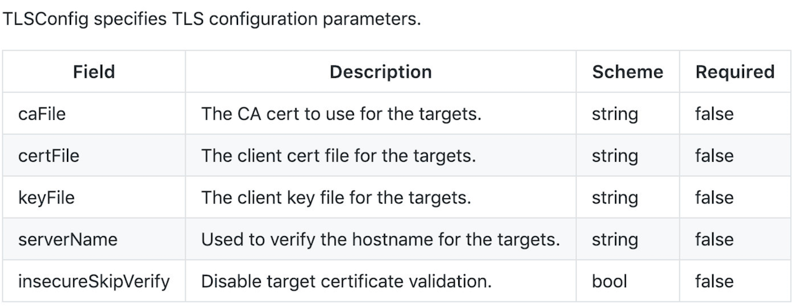
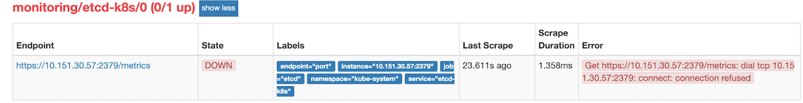
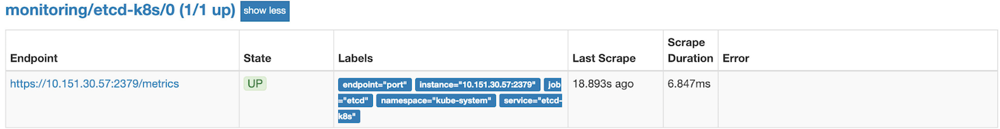
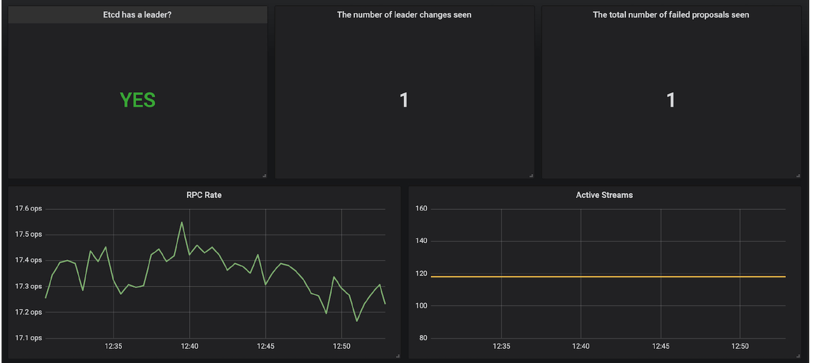

第二节 使用 Prometheus Operator 监控 etcd
除了 Kubernetes 集群中的一些资源对象、节点以及组件需要监控，有的时候我们可能还需要根据实际的业务需求去添加自定义的监控项，添加一个自定义监控的步骤也是非常简单的。
- 第一步建立一个
ServiceMonitor对象，用于Prometheus添加监控项 - 第二步为
ServiceMonitor对象关联metrics数据接口的一个Service对象 - 第三步确保
Service对象可以正确获取到metrics数据
接下来我们就来为大家演示如何添加 etcd 集群的监控。
无论是 Kubernetes 集群外的还是使用 Kubeadm 安装在集群内部的 etcd 集群，我们这里都将其视作集群外的独立集群，因为对于二者的使用方法没什么特殊之处。
1 etcd 证书
对于 etcd 集群一般情况下，为了安全都会开启 https 证书认证的方式，所以要想让 Prometheus 访问到 etcd 集群的监控数据，就需要提供相应的证书校验。
由于我们这里演示环境使用的是 Kubeadm 搭建的集群，我们可以使用 kubectl 工具去获取 etcd 启动的时候使用的证书路径：
$ kubectl get pods -n kube-system
NAME READY STATUS RESTARTS AGE
etcd-master 1/1 Running 0 2h
$ kubectl get pod etcd-master -n kube-system -o yaml
......
spec:
containers:
- command:
- etcd
- --peer-cert-file=/etc/kubernetes/pki/etcd/peer.crt
- --listen-client-urls=https://127.0.0.1:2379
- --advertise-client-urls=https://127.0.0.1:2379
- --client-cert-auth=true
- --peer-client-cert-auth=true
- --data-dir=/var/lib/etcd
- --cert-file=/etc/kubernetes/pki/etcd/server.crt
- --key-file=/etc/kubernetes/pki/etcd/server.key
- --trusted-ca-file=/etc/kubernetes/pki/etcd/ca.crt
- --peer-key-file=/etc/kubernetes/pki/etcd/peer.key
- --peer-trusted-ca-file=/etc/kubernetes/pki/etcd/ca.crt
image: k8s.gcr.io/etcd-amd64:3.1.12
imagePullPolicy: IfNotPresent
livenessProbe:
exec:
command:
- /bin/sh
- -ec
- ETCDCTL_API=3 etcdctl --endpoints=127.0.0.1:2379 --cacert=/etc/kubernetes/pki/etcd/ca.crt
--cert=/etc/kubernetes/pki/etcd/healthcheck-client.crt --key=/etc/kubernetes/pki/etcd/healthcheck-client.key
get foo
failureThreshold: 8
initialDelaySeconds: 15
periodSeconds: 10
successThreshold: 1
timeoutSeconds: 15
name: etcd
resources: {}
terminationMessagePath: /dev/termination-log
terminationMessagePolicy: File
volumeMounts:
- mountPath: /var/lib/etcd
name: etcd-data
- mountPath: /etc/kubernetes/pki/etcd
name: etcd-certs
......
tolerations:
- effect: NoExecute
operator: Exists
volumes:
- hostPath:
path: /var/lib/etcd
type: DirectoryOrCreate
name: etcd-data
- hostPath:
path: /etc/kubernetes/pki/etcd
type: DirectoryOrCreate
name: etcd-certs
......
- o yaml Output format
我们可以看到 etcd 使用的证书都对应在节点的 /etc/kubernetes/pki/etcd 这个路径下面，所以首先我们将需要使用到的证书通过 secret 对象保存到集群中去：(在 etcd 运行的节点)
$ kubectl -n monitoring create secret generic etcd-certs --from-file=/etc/kubernetes/pki/etcd/healthcheck-client.crt --from-file=/etc/kubernetes/pki/etcd/healthcheck-client.key --from-file=/etc/kubernetes/pki/etcd/ca.crt
secret "etcd-certs" created
secret generic
Create a secret based on a file, directory, or specified literal value.
When creating a secret based on a file, the key will default to the basename of the file, and
the value will default to the file content. If the basename is an invalid key or you wish to
chose your own, you may specify an alternate key.
kubectl create secret generic my-secret --from-file=path/to/bar
--from-file=/etc/kubernetes/pki/etcd/healthcheck-client.crt
--from-file=/etc/kubernetes/pki/etcd/healthcheck-client.key
--from-file=/etc/kubernetes/pki/etcd/ca.crts
然后将上面创建的 etcd-certs 对象配置到 prometheus 资源对象中，直接更新 prometheus 资源对象即可：
$ kubectl edit prometheus k8s -n monitoring
-n monitoring namespace
添加如下的 secrets 属性：
nodeSelector:
beta.kubernetes.io/os: linux
replicas: 2
secrets:
- etcd-certs
更新完成后，我们就可以在 Prometheus 的 Pod 中获取到上面创建的 etcd 证书文件了，具体的路径我们可以进入 Pod 中查看：
$ kubectl exec -it prometheus-k8s-0 /bin/sh -n monitoring
Defaulting container name to prometheus.
Use 'kubectl describe pod/prometheus-k8s-0 -n monitoring' to see all of the containers in this pod.
$ ls /etc/prometheus/secrets/etcd-certs/
ca.crt healthcheck-client.crt healthcheck-client.key
2 创建 ServiceMonitor
现在 Prometheus 访问 etcd 集群的证书已经准备好了，接下来创建 ServiceMonitor 对象即可（prometheus-serviceMonitorEtcd.yaml）
apiVersion: monitoring.coreos.com/v1
kind: ServiceMonitor
metadata:
name: etcd-k8s
namespace: monitoring
labels:
k8s-app: etcd-k8s
spec:
jobLabel: k8s-app
endpoints:
- port: port
interval: 30s
scheme: https
tlsConfig:
caFile: /etc/prometheus/secrets/etcd-certs/ca.crt
certFile: /etc/kubernetes/pki/etcd/healthcheck-client.crt
keyFile: /etc/kubernetes/pki/etcd/healthcheck-client.key
insecureSkipVerify: true
selector:
matchLabels:
k8s-app: etcd
namespaceSelector:
matchNames:
- kube-system
- 上面我们在
monitoring命名空间下面创建了名为etcd-k8s的ServiceMonitor对象，基本属性和前面章节中的一致， - 匹配
kube-system这个命名空间下面的具有k8s-app=etcd这个label标签的Service，jobLabel表示用于检索job任务名称的标签， - 和前面不太一样的地方是
endpoints属性的写法，配置上访问etcd的相关证书，endpoints属性下面可以配置很多抓取的参数，比如relabel、proxyUrl，tlsConfig表示用于配置抓取监控数据端点的tls认证，由于证书serverName和etcd中签发的可能不匹配，所以加上了insecureSkipVerify=true

关于 ServiceMonitor 属性的更多用法可以查看文档：https://github.com/coreos/prometheus-operator/blob/master/Documentation/api.md 了解更多
直接创建这个 ServiceMonitor 对象：
$ kubectl create -f prometheus-serviceMonitorEtcd.yaml
servicemonitor.monitoring.coreos.com "etcd-k8s" created
3 创建 Service
ServiceMonitor 创建完成了，但是现在还没有关联的对应的 Service 对象，所以需要我们去手动创建一个 Service 对象（prometheus-etcdService.yaml）：
apiVersion: v1
kind: Service
metadata:
name: etcd-k8s
namespace: kube-system
labels:
k8s-app: etcd
spec:
type: ClusterIP
clusterIP: None
ports:
- name: port
port: 2379
protocol: TCP
---
apiVersion: v1
kind: Endpoints
metadata:
name: etcd-k8s
namespace: kube-system
labels:
k8s-app: etcd
subsets:
- addresses:
- ip: 10.151.30.57
nodeName: etc-master
ports:
- name: port
port: 2379
protocol: TCP
- 我们这里创建的
Service没有采用前面通过label标签的形式去匹配Pod的做法，因为前面我们说过很多时候我们创建的 etcd 集群是独立于集群之外的， - 这种情况下面我们就需要自定义一个
Endpoints，要注意metadata区域的内容要和Service保持一致，Service的clusterIP设置为None，对改知识点不太熟悉的，可以去查看我们前面关于 Service 部分的讲解。 Endpoints的subsets中填写etcd集群的地址即可，我们这里是单节点的，填写一个即可，
直接创建该 Service 资源：
$ kubectl create -f prometheus-etcdService.yaml
创建完成后，隔一会儿去 Prometheus 的 Dashboard 中查看 targets，便会有 etcd 的监控项了：

可以看到还是有一个明显的错误，和我们上节课监控 kube-scheduler 的错误比较类似于，因为我们这里的 etcd 的是监听在 127.0.0.1 这个 IP 上面的，所以访问会拒绝：
--listen-client-urls=https://127.0.0.1:2379
同样我们只需要在 /etc/kubernetes/manifest/ 目录下面（static pod 默认的目录）的 etcd.yaml 文件中将上面的listen-client-urls更改成 0.0.0.0 即可：
$ ls /etc/kubernetes/manifests/
etcd.yaml kube-apiserver.yaml kube-controller-manager.yaml kube-scheduler.yaml
--listen-client-urls=https://0.0.0.0:2379
重启 etcd，生效后，查看 etcd 这个监控任务就正常了：

数据采集到后，可以在 grafana 中导入编号为3070的 dashboard，获取到 etcd 的监控图表。
